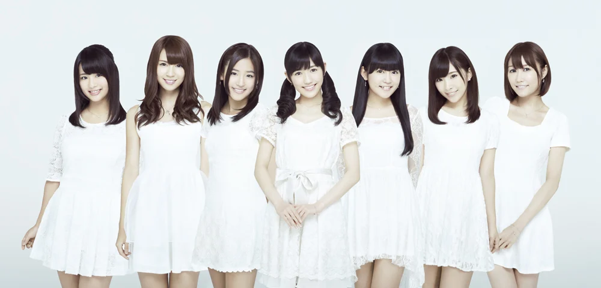

ノースリーブス
メンバー
高橋みなみ、峰岸みなみ、小嶋陽菜
チームAで結成された３人組のユニット。略称は、no3b
ノースリーブスの結成前から「純愛のクレッシェンド」「Bye Bye Bye」でユニットを組んでいた。
- 1. Relax!
- 2008年11月26日
- 2. タネ
- 2009年3月18日
- 3. キスの流星
- 2009年11月25日
- 4. lie
- 2010年4月21日
- 5. 君しか
- 2010年8月4日
- 6. Answer
- 2011年3月2日
- 7. 唇 触れず…
- 2011年6月29日
- 8. ペディキュアday
- 2011年12月28日
- 9. キリギリス人
- 2013年1月16日
- 1. 3seconds
- 2008年11月1日、ペルソナ名義
- 2. クリスマスプレゼント
- 2008年12月19日、ペルソナ名義
- 3. ペロリとぺぺロ
- 2011年7月6日、高橋みなみソロ：作詞 峰岸みなみ
- ノースリーブス
- 2011年1月1日
- 「Relax!」プレ・リリース・イベント
- 2008年10月18日：お台場メディアージュ
- Thank! Relax!
- 2008年11月26日：東京ドームシティ ラクーアガーデンステージ
- 「Answer」発売記念イベント
- 2011年3月2日：SHIBUYA-AX
- 「唇 触れず…」発売記念イベント
- 2011年6月30日：恵比寿ガーデンホール
- ノースリーブス6thシングル発売記念特別公演～丸ごとno3b!!～「Answer」編
- 2011年8月10日：横浜BLITZ
- Yahoo!JAPAN prezents ノースリーブス from AKB48 スペシャルライブ
- 2011年11月2日：ディファ有明
- 「ペディキュアday」発売記念イベント
- 2012年1月4日：Zepp Tokyo
- 「キリギリス人」発売記念イベント
- 2013年1月19日：ディファ有明
- ノースリーブス 10th ANNIVERSARY～丸ごとno3b!!
- 2018年11月26日：EXシアター六本木
- ノースリーブス 15th Anniversary Live
- 2023年11月25日：Zepp Haneda
シングル
配信限定
アルバム
ライブイベント
渡り廊下走り隊7

2008年、渡辺麻友、多田愛佳、仲川遥香の3人が「お菓子なシスターズ」として、NHK教育テレビ「味楽る！ミミカ」のエンディング曲「恋のチューイング」を担当し、後に平島夏美が加わって「渡り廊下走り隊」を結成。2010年に菊地あやかが加わり、5人組となり、さらにその年、岩佐美咲と小森美香が加入して「渡り廊下走り隊7」となる。2012年に平島夏美がAKB48の活動辞退し、暫定的に浦野一美が加入する。
- 1. 初恋ダッシュ／青い未来
- 2009年1月28日
- 2. やる気花火
- 2009年4月22日
- 3. 完璧ぐ～のね
- 2009年11月11日
- 4. アッカンべー橋
- 2010年3月17日
- 5. 青春のフラッグ
- 2010年6月30日
- 6. ギュッ
- 2010年9月1日
- 7. バレンタイン・キッス
- 2011年2月2日
- 8. へたっぴウィンク
- 2011年8月3日
- 9. 希望山脈
- 2011年11月30日
- 10. 少年よ 嘘をつけ！
- 2012年5月30日
- 廊下は走るな！
- 2010年10月13日
- 渡り廊下をゆっくり歩きたい
- 2013年12月25日
- 渡り廊下走り隊 解散コンサート
- 2014年9月3日
シングル（渡り廊下走り隊）
シングル（渡り廊下走り隊７）
アルバム
イベント
DIVA
2011年1月10日、メンバーにユニット結成が通知され、同年2月27日のAKB48チーム研究生公演に特別出演したユニットメンバーらによって、ユニット結成が公表された。
ユニット結成時は4人で、秋元才加、梅田彩佳、宮澤佐江、増田有華である。同年12月に一般公募された追加メンバー６人が発表された。
追加メンバーは、粕谷聡子、二見夕貴、古川温子、福野来夢、山上綾加、井上結菜の６人である
- 1. 月の裏側
- 2011年5月18日
- 2. Cry
- 2011年8月10日
- 3. Lost the way
- 2012年3月21日
- 4. DISCOVERY
- 2014年10月8日
- DIVA
- 2014年11月5日
- 神戸コレクション2011上海
- 2011年4月16日、上海浦東展覧館
- a-nation 10th Anniversary for Life Charge ▶ Go! ウイダーinゼリー
- 2011年8月6日、福岡市・海の中道海浜公園野外劇場
- 家電フェア2012&大処分蚤の市 in福岡 Yahoo! JAPANドーム
- 2012年3月17日、福岡 Yahoo! JAPANドーム
- a-nation island powered by ウイダーinゼリー
- 2013年8月3日、国立代々木競技場第一体育館
- DiVAレギュラー公演
- 2013年10月7日、AKIBAカルチャーズ劇場
- プレミアムラストライブ
- 2014年10月30日、幕張メッセ
シングル
アルバム
イベント
フレンチ・キス
フレンチ・キスは、日本の女性アイドルグループ、AKB48から派生した3人組アイドルユニット。
メンバーは、柏木由紀、高城亜樹、倉持明日香。
- 1. ずっと前から
- 2010年9月8日
- 2. if
- 2011年1月19日
- 3. カッコ悪い I love you!
- 2011年5月11日
- 4. 最初のメール
- 2011年11月22日
- 5. ロマンス・プライバシー
- 2012年7月18日
- 6. 思い出せない花
- 2014年10月1日
- French Kiss
- 2015年10月14日
- a-nation 10th Anniversary for Life Charge ▶ Go! ウイダーinゼリー
- 2011年8月6日、福岡市・海の中道海浜公園野外劇場
- Power of Watanabe Girls 〜Smile For Japan〜
- 2011年8月7日、仙台市・Rensa
- French Kiss Live 〜LAST KISS〜
- 2015年11月5日：さいたまスーパーアリーナ
シングル
アルバム
イベント
Not yet
秋元康は、「歌もダンスも“まだまだ”だけど、『その分、成長できるんだ』と解釈して、一生懸命に頑張る実物大の4人をコンセプトに名づけた」と語っている。
メンバーは、大島優子、北原里英、指原莉乃、横山由依。
- 1. 週末Not yet
- 2011年3月16日
- 2. 波乗りかき氷
- 2011年7月6日
- 3. ペラペラペラオ
- 2011年11月16日
- 4. 西瓜BABY
- 2012年5月30日
- 5. ヒリヒリの花
- 2013年9月25日
- already
- 2014年4月23日
- Not yet 1stアルバム『already』発売記念 SPECIAL LIVE
- 2014年5月10日（土）:東京有明コロシアム
シングル
アルバム
イベント

前田敦子
1991年7月１０日生、身長161m、A型、千葉県市川市出身
- 1. Flower
- 2011年6月22日
- 2. 君は僕だ
- 2012年6月20日
- 3. タイムマシンなんていらない
- 2013年9月18日
- 4. セブンスコード
- 2014年3月5日
- Selfish
- 2016年6月22日
シングル
アルバム
板野友美
1991年7月3日生、A型、154cm、神奈川県横浜市出身
- 1. Dear J
- 2011年1月26日
- 2. ふいに
- 2011年7月13日
- 3. 10年後の君へ
- 2012年4月25日
- 4. 1%
- 2013年6月12日
- 5. little
- 2014年2月5日
- 6. COME PARTY!
- 2014年12月17日
- 7. Gimme Gimme Luv
- 2015年7月1日
- 8. HIDE & SEEK
- 2016年4月20日
- 9. #いいね!
- 2017年5月17日
- 10. Just as I am
- 2018年2月28日
- 11. すき。ということ
- 2019年2月13日
- 1. Wanna be now
- 2011年5月11日
- 2. 愛にピアス
- 2011年6月1日
- 1. S×W×A×G
- 2014年7月2日
- 2. Get Ready♡
- 2016年11月2日
- 3. LOCA
- 2019年10月16日
- Tomomi Itano Live Tour ～S×W×A×G～
- 2014年8月〜9月
- Tomomi Itano ASIA TOUR 2016
- 2016年5月7日〜8月6日：東京、上海、香港、北京のアジア4大都市
シングル
配信限定
アルバム
コンサート
指原莉乃
1992年11月21日生、O型、大分県、159cm
- それでも好きだよ
- 2012年5月2日
- 意気地なしマスカレード （指原莉乃 with アンリレ）
- 2012年10月23日：AKB48の入山杏奈（アン）、川栄李奈（リ）、加藤玲奈（レ）
シングル
岩佐美咲
1995年1月30日、千葉県出身、
- 1. 無人駅
- 2012年2月1日
- 2. もしも私が空に住んでいたら
- 2013年1月9日
- 3. 鞆の浦慕情
- 2014年1月8日
- 4. 初酒
- 2015年4月29日
- 5. ごめんね東京
- 2016年1月6日
- 6. 鯖街道
- 2017年1月10日
- 7. 佐渡の鬼太鼓
- 2018年2月27日
- 8. 恋の終わり三軒茶屋
- 2019年2月13日
- 9. 右手と左手のブルース
- 2020年4月22日
- 10. アキラ
- 2021年10月6日
- 11. マッチ
- 2024年8月28日
- 12. 合鍵
- 2026年2月4日
- 1. リクエスト・カバーズ
- 2013年11月6日
- 2. 美咲めぐり 〜第1章〜
- 2016年11月30日
- 3. 美咲めぐり 〜第2章〜
- 2019年11月6日
- 4. 美咲めぐり 〜第3章〜
- 2023年10月4日
- 岩佐美咲ファーストコンサート〜無人駅から新たなる出発の刻(とき)〜
- 2016年1月30日：浅草公会堂
- 岩佐美咲コンサート〜熱唱!時代を結ぶ 演歌への道〜
- 2017年1月29日
- 3rdコンサート〜笑顔・心・感謝で繋ぐ…至福の2日間〜
- 2017年
- 岩佐美咲コンサート2018〜演歌で伝える未来のカタチ〜
- 2018年
- 岩佐美咲コンサート2019〜世代を超えて受け継がれる音楽の力〜
- 2019年